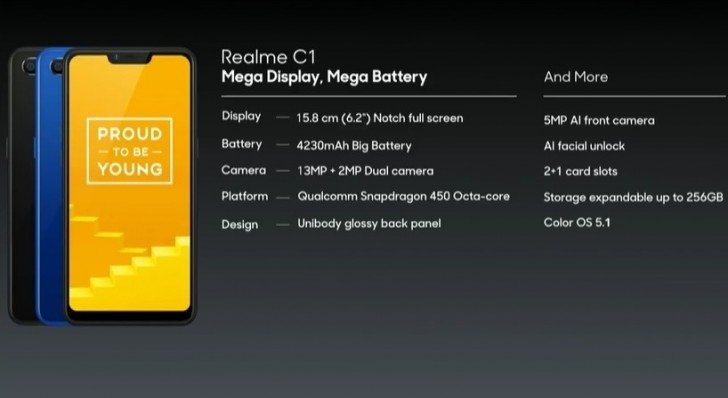
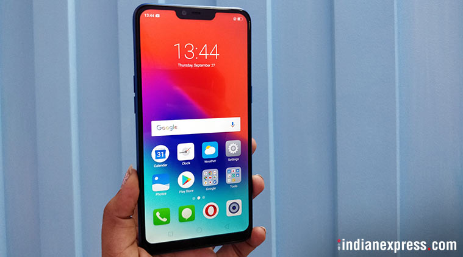

Untuk menggebrak pasar smartphone di Indonesia, pendatang baru Realme, hadir dengan strategi yang mengejutkan. Selain langsung menggelontorkan 3 varian smartphone, harga yang dibanderol pun cukup terjangkau. Selain Realme 2 dan Realme 2 Pro, salah satu yang cukup menarik perhatian adalah Realme C1.
Realme C1 benar-benar diperuntukkan bagi mereka yang baru pertama kali menggunakan smartphone, membutuhkan smartphone dengan harga yang tak terlalu mahal. Meski harganya hanya sekitar Rp1 jutaan namun di dalam C1 terdapat banyak kelebihan yang membuatnya tak seperti smartphone murahan. Ini membuat C1 benar-benar menaikkan kelas sebuah smartphone entry level.
Realme C1 menghilangkan desain efek berlian di bodi belakang, namun Notch yang diusung cukup lebar, seperti Realme 2. Desain bodi belakanglah yang membedakan Realme C1 dengan Realme 2. Sedangkan yang membedakan C1 dengan Realme 2 Pro adalah Notch di depan layar. Jika C1 memiliki notch yang panjang, Realme 2 Pro memiliki notch mirip tetest air (water drop).
Desain dari Realme C1 ini cukup menarik perhatian karena memiliki look yang premium. Desain ini kabarnya disebut 12 lapisan laminasi nanoscale, ditambah 2.5D back plate, untuk build quality yang lebih kuat dan lebih tahan terhadap goresan. Electroplated rear cover memastikan permukaan yang menawan dan lembut, dengan konduktivitas yang lebih baik dan tahan panas.
Ink printing memberikan efek 3D yang memukau. Elegant microarc dengan lekukan yang lebih besar di bagian tengah memberikan keseimbangan estetika dan kenyamanan genggaman. Untuk ketersediaan warna, Realme C1 hadir dalam dua warna, Mirror Black & Navy Blue. Terdapat tiga slot kartu, masing-masing untuk dua nano SIM dan MicroSD. Micro-USB port, lubang speaker dan soket headphone 3,5mm berada di bagian bawah smartphone. Sisi belakang hanya disematkan dua kamera, tepatnya di bagian atas, ditambah modul LED Flash dan logo Realme di bagian bawah.
Baterai dan layar besarHarga Realme C1 dibanderol Rp1,4 jutaan. Kapasitas baterai yang digunakan yakni 4230 mAH. Pengguna dapat menggunakan smartphone ini sebagai daily driver yang memberikan keleluasaan untuk multi-tasking, bermain game, mengambil foto atau memutar video seharian tanpa takut baterai akan cepat habis. Dalam pengujiannya, Realme C1 bisa melakukan panggilan telepon nonstop selama 44 jam. Untuk penggunaan musik bisa dilakukan selama 18 jam, menonton video selama 15 jam dan bermain game selama 10 jam. Semua dalam keadaan terkoneksi wifi. Jika digunakan untuk membrowsing internet dengan update 10 detik sekali, C1 bisa bertahan sampai 18 jam. Meski tidak mengusung fast charging maupun VOOC layaknya Oppo, Realme C1 juga tergolong cepat dalam urusan pengecasan. Dalam pengujian, pengecasan dengan adapter 10W bisa membuat Realme C1 terisi penuh dalam kurun 2,5 jam sampai 3 jam."
Menariknya, Realme juga telah memberikan fitur AI Power Manager, yang notabene telah ada di Realme 2 dan Realme 2 Pro. Fitur ini cukup memberikan keleluasaan pada sistem untuk mengoptimalisasi konsumsi daya dari aplikasi dan juga mengontrol jumlah inti prosesor untuk menghindari daya yang terbuang secara berlebih (power waste)
Dari segi layar, Realme C1 tidak terlihat seperti smartphone dengan harga dibawah Rp 2 juta. Realme C1 merupakan smartphone pertama dikelasnya yang hadir dengan layar notch 6.2 inci rasio 19:9 atau 88.8 persen, serta memiliki resolusi HD+ atau 720 x 1520 p. Untuk ukuran bezel, Realme C1 terhitung memiliki bezel tipis dengan ukuran screen to body 2.05mm. Layarnya juga mengusung Corning Gorilla Glass yang merupakan jaminan mutu untuk proteksi display smartphone. Tidak ada sensor fingerprint namun Realme C1 dilengkapi dengan Face Unlock yang berfungsi cukup baik dalam keadaan cukup cahaya. Sedikit tips, sensor akan cukup akurat mengenali wajah anda dalam keadaan mata terbuka lebar.
 Dapur PacuUntuk performa smartphone Realme C1, Snapdragon 450 bukanlah chipset lemot. Performanya sangat mencukupi untuk berbagai kebutuhan dan jenis aplikasi. Chipset ini memiliki CPU Octa-Core 1.8 GHz dan menggunakan GPU Adreno 506. Hasil pengujian menggunakan benchmark AnTuTu, Snapdragon 450 pada Realme C1 bisa mendapatkan score rata-rata 56.000, hampir menyamai SoC Snadragon 625. Selain itu, performa Snapdragon Realme C1 yang memiliki CPU Octa-Core 1.8 GHz ini juga memiliki kelebihan mempercepat kinerja grafis dengan konsumsi daya yang minim.
Memori yang diusungnya memiliki kapasitas yang cukup untuk sebuah smartphone entry level. Misalnya RAM 2GB dan ROM sebesar 16GB. Memori sebesar itu memang cepat habis. Storage internal akan tersisa 8.67GB dalam beberapa kali penyimpanan karena aplikasi yang memakan ruang. Apalagi jika menginstall game macam PUBG. Terdapat microSD di dalamnya yang bisa meningkatkan ruang penyimpanan sampai 256GB. Yang menarik, terdapat pengingat uninstall aplikasi untuk memberikan notifikasi aplikasi mana saja yang jarang dibuka pada periode waktu tertentu. Jika pengguna membutuhkan ruang memori yang lebih luas maka aplikasi tersebut masuk kategori pertama untuk di uninstall. Realme C1 dibekali juga dengan sistem operasi ColourOS 5.2, yang berbasis Android 8.1 Oreo. Ini merupakan OS sama yang digunakan oleh Oppo. Ada fitur Do-Not-Disturb saat kamu bermain game, atau menonaktifkan auto-brightness. Ada juga fitur blacklist nomor kontak, pop-up notifikasi saat muncul aksi di WhatsApp atau Facebook Messenger.
Dual KameraRealme C1 memiliki dua kamera dengan kedalaman sensor masing-masing 13 megapiksel dan 2 megapiksel. Resolusi paling kecil digunakan untuk mendukung foto bokeh dalam mode portrait. Dengan obyek yang dipenuhi cahaya cukup, C1 mampu menangkap hampir semua detil yang ada, bahkan yang jaraknya jauh sekalipun. Mode lainnya adalah Auto HDR, Panorama, dan Time-Lapse. Tidak ketinggalan sticker untuk membuat hari anda lebih bersemangat dengan animasi lucu. Kamera depan dengan sensor 5MP dapat menangkap warna dengan baik dengan objek selfie sekalipun. Namun lagi-lagi syaratnya adalah pencahayaan yang cukup. Usahakan untuk mengambil foto di bawah sinar matahari. Saat malam hari, kita benar-benar bergantung pada pencahayaan. Rekaman video mencapai maksimal 1080p tetapi hasilnya tidak terlalu tajam, dan tidak ada fitur stabilisasi. Untuk urusan smartphone entry level, Realme C1 bisa masuk hitungan. Bisa dibilang, ini merupakan smartphone entry level rasa kelas menengah. Banyak fitur kekinian di dalamnya walau harganya di bawah Rp2 juta. Jelas-jelas penantang yang harus diwaspadai oleh Xiaomi dan Asus.